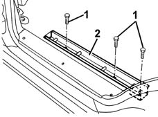

7050A95 mount (one) fitting rear seat to floor - r r
- Path
- Procedures > 70 FITTINGS > 7050 REAR SEATS > 7050A rear seat assembly > 7050A95 mount (one) fitting rear seat to floor - r r
- Kind
- repair procedure (removal / refitting; the operation number is the code)
- Applies to
- all engines; all production periods
- Interactive page
- https://sloeber94.github.io/elrnDB-fMltpl/en/#/2892248
Applies to: all engines; all production periods
 Removing
Removing
 Refitting
Refitting7050A90 rear seat (one) - r re - repair with seat removed
7040L14 panel brackets (1) covering seat attachments to passenger compartment floor - r r
1. Undo the bolts.
2. Remove the anchor bracket.

Applies to: all engines; all production periods
Refitting
RemovingCheck that the anchor bracket is undamaged.
Fit the anchor bracket.
Tighten the bolts.
 | Fastening | Component | Ø | Value (daNm) |
|---|---|---|---|---|
- | Bolt | REAR SEAT MOUNTING SUPPORT. | M10 x 1.25 | 3.4 |
7040L14 panel brackets (1) covering seat attachments to passenger compartment floor - r r
Topics linked from this page (2)
- 7040L14 panel brackets (1) covering seat attachments to passenger compartment floor - r r
- 7050A90 rear seat (one) - r re - repair with seat removed